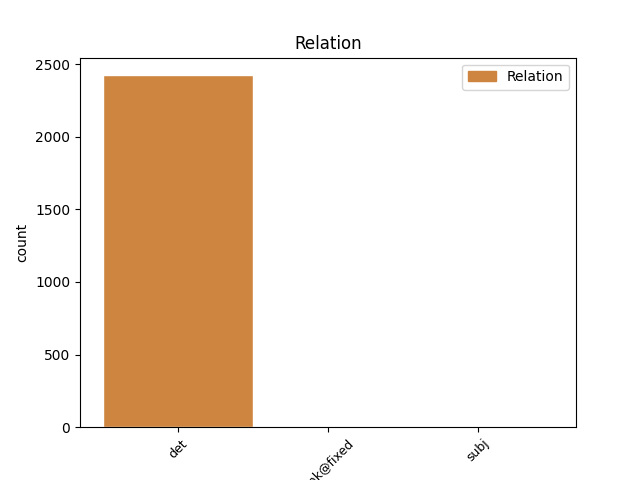
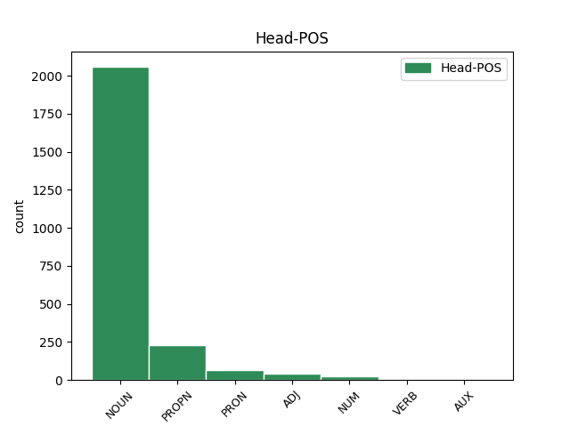
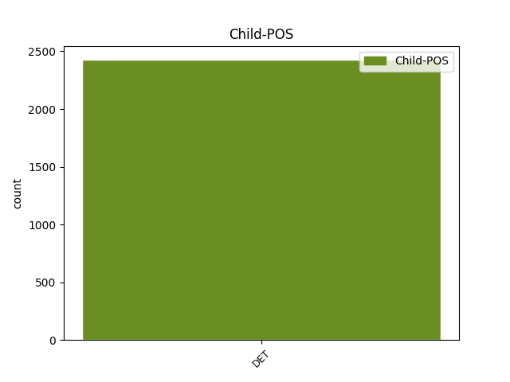

Distribution of features within this leaf



Agreement Rules sorted by frequency.
- When the dependent token is the determiner(det) of the head token, and the head token is NOUN and the dependent token is DET.
1 Segundo _ _ _ _ 0 _ _ _
2 Cagiao _ _ _ _ 0 _ _ _
3 , _ _ _ _ 0 _ _ _
4 isto _ _ _ _ 0 _ _ _
5 foi _ _ _ _ 0 _ _ _
6 o _ _ _ _ 0 _ _ _
7 que _ _ _ _ 0 _ _ _
8 dificultou _ _ _ _ 0 _ _ _
9 os _ _ _ _ 0 _ _ _
10 que _ _ _ _ 0 _ _ _
11 ían _ _ _ _ 0 _ _ _
12 ser _ _ _ _ 0 _ _ _
13 derradeiros _ _ _ _ 0 _ _ _
14 pasos _ _ _ _ 0 _ _ _
15 de _ _ _ _ 0 _ _ _
16 a _ _ _ _ 0 _ _ _
17 regulación _ _ _ _ 0 _ _ _
18 laboral _ _ _ _ 0 _ _ _
19 de _ _ _ _ 0 _ _ _
20 as _ _ _ _ 0 _ _ _
21 antigas _ _ _ _ 0 _ _ _
22 Astano _ _ _ _ 0 _ _ _
23 e _ _ _ _ 0 _ _ _
24 Bazán _ _ _ _ 0 _ _ _
25 , _ _ _ _ 0 _ _ _
26 denominada _ _ _ _ 0 _ _ _
27 Navantia _ _ _ _ 0 _ _ _
28 dende _ _ _ _ 0 _ _ _
29 esta este DET Edfs Gender=Fem|Number=Sing|PronType=Dem 30 det _ _
30 semana semana NOUN Scfs Gender=Fem|Number=Sing 0 _ _ _
31 . _ _ _ _ 0 _ _ _
1 De _ _ _ _ 0 _ _ _
2 dar _ _ _ _ 0 _ _ _
3 se _ _ _ _ 0 _ _ _
4 esa _ _ _ _ 0 _ _ _
5 prexubilación _ _ _ _ 0 _ _ _
6 por _ _ _ _ 0 _ _ _
7 la o DET Ddfs Definite=Def|Gender=Fem|Number=Sing|PronType=Art 8 det _ _
8 SEPI SEPI PROPN Zgfs Gender=Fem|Number=Sing 0 _ _ _
9 , _ _ _ _ 0 _ _ _
10 tería _ _ _ _ 0 _ _ _
11 que _ _ _ _ 0 _ _ _
12 ser _ _ _ _ 0 _ _ _
13 mediante _ _ _ _ 0 _ _ _
14 un _ _ _ _ 0 _ _ _
15 expediente _ _ _ _ 0 _ _ _
16 aberto _ _ _ _ 0 _ _ _
17 a _ _ _ _ 0 _ _ _
18 todos _ _ _ _ 0 _ _ _
19 os _ _ _ _ 0 _ _ _
20 que _ _ _ _ 0 _ _ _
21 cumpran _ _ _ _ 0 _ _ _
22 52 _ _ _ _ 0 _ _ _
23 anos _ _ _ _ 0 _ _ _
24 e _ _ _ _ 0 _ _ _
25 con _ _ _ _ 0 _ _ _
26 garantía _ _ _ _ 0 _ _ _
27 de _ _ _ _ 0 _ _ _
28 cobertura _ _ _ _ 0 _ _ _
29 de _ _ _ _ 0 _ _ _
30 as _ _ _ _ 0 _ _ _
31 vacantes _ _ _ _ 0 _ _ _
32 " _ _ _ _ 0 _ _ _
33 . _ _ _ _ 0 _ _ _
1 O _ _ _ _ 0 _ _ _
2 téxtil _ _ _ _ 0 _ _ _
3 e _ _ _ _ 0 _ _ _
4 a _ _ _ _ 0 _ _ _
5 industria _ _ _ _ 0 _ _ _
6 gráfica _ _ _ _ 0 _ _ _
7 son _ _ _ _ 0 _ _ _
8 de _ _ _ _ 0 _ _ _
9 as o DET Ddfp Definite=Def|Gender=Fem|Number=Plur|PronType=Art 10 det _ _
10 poucas pouco PRON Infp Gender=Fem|Number=Plur|PronType=Ind 0 _ _ _
11 que _ _ _ _ 0 _ _ _
12 repuntan _ _ _ _ 0 _ _ _
13 . _ _ _ _ 0 _ _ _
1 O o DET Ddms Definite=Def|Gender=Masc|Number=Sing|PronType=Art 2 det _ _
2 téxtil téxtil ADJ A0ms Gender=Masc|Number=Sing 0 _ _ _
3 e _ _ _ _ 0 _ _ _
4 a _ _ _ _ 0 _ _ _
5 industria _ _ _ _ 0 _ _ _
6 gráfica _ _ _ _ 0 _ _ _
7 son _ _ _ _ 0 _ _ _
8 de _ _ _ _ 0 _ _ _
9 as _ _ _ _ 0 _ _ _
10 poucas _ _ _ _ 0 _ _ _
11 que _ _ _ _ 0 _ _ _
12 repuntan _ _ _ _ 0 _ _ _
13 . _ _ _ _ 0 _ _ _
1 Era _ _ _ _ 0 _ _ _
2 o _ _ _ _ 0 _ _ _
3 Ferrol _ _ _ _ 0 _ _ _
4 de _ _ _ _ 0 _ _ _
5 Pablo _ _ _ _ 0 _ _ _
6 Iglesias _ _ _ _ 0 _ _ _
7 , _ _ _ _ 0 _ _ _
8 Amador _ _ _ _ 0 _ _ _
9 Rei _ _ _ _ 0 _ _ _
10 , _ _ _ _ 0 _ _ _
11 Daniel _ _ _ _ 0 _ _ _
12 Niebla _ _ _ _ 0 _ _ _
13 , _ _ _ _ 0 _ _ _
14 Ricardo _ _ _ _ 0 _ _ _
15 Carvalho _ _ _ _ 0 _ _ _
16 Calero _ _ _ _ 0 _ _ _
17 e _ _ _ _ 0 _ _ _
18 Moncho _ _ _ _ 0 _ _ _
19 Reboiras _ _ _ _ 0 _ _ _
20 , _ _ _ _ 0 _ _ _
21 e _ _ _ _ 0 _ _ _
22 non _ _ _ _ 0 _ _ _
23 era _ _ _ _ 0 _ _ _
24 o _ _ _ _ 0 _ _ _
25 de _ _ _ _ 0 _ _ _
26 Franco _ _ _ _ 0 _ _ _
27 que _ _ _ _ 0 _ _ _
28 , _ _ _ _ 0 _ _ _
29 aínda _ _ _ _ 0 _ _ _
30 así _ _ _ _ 0 _ _ _
31 , _ _ _ _ 0 _ _ _
32 tivo _ _ _ _ 0 _ _ _
33 a _ _ _ _ 0 _ _ _
34 súa _ _ _ _ 0 _ _ _
35 estatua _ _ _ _ 0 _ _ _
36 en _ _ _ _ 0 _ _ _
37 a _ _ _ _ 0 _ _ _
38 principal _ _ _ _ 0 _ _ _
39 praza _ _ _ _ 0 _ _ _
40 de _ _ _ _ 0 _ _ _
41 a _ _ _ _ 0 _ _ _
42 cidade _ _ _ _ 0 _ _ _
43 até _ _ _ _ 0 _ _ _
44 o o DET Ddms Definite=Def|Gender=Masc|Number=Sing|PronType=Art 45 det _ _
45 2002 2002 NUM Ncnms Gender=Masc|Number=Sing|NumType=Card 0 _ _ _
46 . _ _ _ _ 0 _ _ _
1 En _ _ _ _ 0 _ _ _
2 Os _ _ _ _ 0 _ _ _
3 últimos _ _ _ _ 0 _ _ _
4 fuxidos _ _ _ _ 0 _ _ _
5 Xosé _ _ _ _ 0 _ _ _
6 Fernández _ _ _ _ 0 _ _ _
7 Ferreiro _ _ _ _ 0 _ _ _
8 retoma _ _ _ _ 0 _ _ _
9 o _ _ _ _ 0 _ _ _
10 tema _ _ _ _ 0 _ _ _
11 de _ _ _ _ 0 _ _ _
12 a _ _ _ _ 0 _ _ _
13 represión _ _ _ _ 0 _ _ _
14 , _ _ _ _ 0 _ _ _
15 continúa _ _ _ _ 0 _ _ _
16 o o DET Ddms Definite=Def|Gender=Masc|Number=Sing|PronType=Art 18 det _ _
17 antes _ _ _ _ 0 _ _ _
18 iniciado iniciar VERB V0p0ms Gender=Masc|Number=Sing|VerbForm=Part 0 _ _ _
19 en _ _ _ _ 0 _ _ _
20 aquel _ _ _ _ 0 _ _ _
21 exitoso _ _ _ _ 0 _ _ _
22 Agosto _ _ _ _ 0 _ _ _
23 de _ _ _ _ 0 _ _ _
24 o _ _ _ _ 0 _ _ _
25 36 _ _ _ _ 0 _ _ _
26 , _ _ _ _ 0 _ _ _
27 que _ _ _ _ 0 _ _ _
28 lle _ _ _ _ 0 _ _ _
29 valera _ _ _ _ 0 _ _ _
30 o _ _ _ _ 0 _ _ _
31 Xerais _ _ _ _ 0 _ _ _
32 de _ _ _ _ 0 _ _ _
33 o _ _ _ _ 0 _ _ _
34 ano _ _ _ _ 0 _ _ _
35 91 _ _ _ _ 0 _ _ _
36 . _ _ _ _ 0 _ _ _
1 Benvido _ _ _ _ 0 _ _ _
2 sexa _ _ _ _ 0 _ _ _
3 este _ _ _ _ 0 _ _ _
4 recordatorio _ _ _ _ 0 _ _ _
5 de _ _ _ _ 0 _ _ _
6 que _ _ _ _ 0 _ _ _
7 en _ _ _ _ 0 _ _ _
8 a _ _ _ _ 0 _ _ _
9 Galiza _ _ _ _ 0 _ _ _
10 non _ _ _ _ 0 _ _ _
11 houbo _ _ _ _ 0 _ _ _
12 guerra _ _ _ _ 0 _ _ _
13 , _ _ _ _ 0 _ _ _
14 o o DET Ddms Definite=Def|Gender=Masc|Number=Sing|PronType=Art 19 subj _ _
15 que _ _ _ _ 0 _ _ _
16 aquí _ _ _ _ 0 _ _ _
17 verdadeiramente _ _ _ _ 0 _ _ _
18 houbo _ _ _ _ 0 _ _ _
19 foi ser AUX Vei30s Mood=Ind|Number=Sing|Person=3|Tense=Past|VerbForm=Fin 0 _ _ _
20 unha _ _ _ _ 0 _ _ _
21 feroz _ _ _ _ 0 _ _ _
22 purga _ _ _ _ 0 _ _ _
23 social _ _ _ _ 0 _ _ _
24 de _ _ _ _ 0 _ _ _
25 non _ _ _ _ 0 _ _ _
26 afectos _ _ _ _ 0 _ _ _
27 a _ _ _ _ 0 _ _ _
28 o _ _ _ _ 0 _ _ _
29 ditador _ _ _ _ 0 _ _ _
30 . _ _ _ _ 0 _ _ _
1 Malia _ _ _ _ 0 _ _ _
2 os _ _ _ _ 0 _ _ _
3 acertos _ _ _ _ 0 _ _ _
4 parciais _ _ _ _ 0 _ _ _
5 _ _ _ _ _ 0 _ _ _
6 case _ _ _ _ 0 _ _ _
7 sempre _ _ _ _ 0 _ _ _
8 asolagados _ _ _ _ 0 _ _ _
9 por _ _ _ _ 0 _ _ _
10 lo _ _ _ _ 0 _ _ _
11 conxunto _ _ _ _ 0 _ _ _
12 _ _ _ _ _ 0 _ _ _
13 o _ _ _ _ 0 _ _ _
14 lector _ _ _ _ 0 _ _ _
15 decidirá _ _ _ _ 0 _ _ _
16 se _ _ _ _ 0 _ _ _
17 por _ _ _ _ 0 _ _ _
18 estes _ _ _ _ 0 _ _ _
19 acertos _ _ _ _ 0 _ _ _
20 pagou pagar VERB Vei30s Mood=Ind|Number=Sing|Person=3|Tense=Past|VerbForm=Fin 0 _ _ _
21 a o DET Ddfs Definite=Def|Gender=Fem|Number=Sing|PronType=Art 20 unk@fixed _ _
22 pena _ _ _ _ 0 _ _ _
23 ler _ _ _ _ 0 _ _ _
24 o _ _ _ _ 0 _ _ _
25 libro _ _ _ _ 0 _ _ _
26 enteiro _ _ _ _ 0 _ _ _
27 . _ _ _ _ 0 _ _ _
Disagree Examples:
1 Algúns _ _ _ _ 0 _ _ _
2 acadan _ _ _ _ 0 _ _ _
3 a _ _ _ _ 0 _ _ _
4 fama _ _ _ _ 0 _ _ _
5 , _ _ _ _ 0 _ _ _
6 parecen _ _ _ _ 0 _ _ _
7 definitivos _ _ _ _ 0 _ _ _
8 e _ _ _ _ 0 _ _ _
9 a _ _ _ _ 0 _ _ _
10 o _ _ _ _ 0 _ _ _
11 cabo _ _ _ _ 0 _ _ _
12 de _ _ _ _ 0 _ _ _
13 os o DET Ddms Definite=Def|Gender=Masc|Number=Sing|PronType=Art 14 det _ _
14 anos ano NOUN Scmp Gender=Masc|Number=Plur 0 _ _ _
15 esvaen _ _ _ _ 0 _ _ _
16 se _ _ _ _ 0 _ _ _
17 . _ _ _ _ 0 _ _ _
1 A _ _ _ _ 0 _ _ _
2 estes _ _ _ _ 0 _ _ _
3 tres _ _ _ _ 0 _ _ _
4 colectivos _ _ _ _ 0 _ _ _
5 as _ _ _ _ 0 _ _ _
6 empresas _ _ _ _ 0 _ _ _
7 non _ _ _ _ 0 _ _ _
8 lles _ _ _ _ 0 _ _ _
9 recoñecen _ _ _ _ 0 _ _ _
10 os _ _ _ _ 0 _ _ _
11 seus _ _ _ _ 0 _ _ _
12 dereitos _ _ _ _ 0 _ _ _
13 de _ _ _ _ 0 _ _ _
14 autor _ _ _ _ 0 _ _ _
15 e _ _ _ _ 0 _ _ _
16 usan _ _ _ _ 0 _ _ _
17 a o DET Ddfs Definite=Def|Gender=Fem|Number=Sing|PronType=Art 19 det _ _
18 súas _ _ _ _ 0 _ _ _
19 imaxes imaxe NOUN Scfp Gender=Fem|Number=Plur 0 _ _ _
20 sen _ _ _ _ 0 _ _ _
21 permiso _ _ _ _ 0 _ _ _
22 . _ _ _ _ 0 _ _ _
1 Os _ _ _ _ 0 _ _ _
2 ruídos _ _ _ _ 0 _ _ _
3 que _ _ _ _ 0 _ _ _
4 existen _ _ _ _ 0 _ _ _
5 en _ _ _ _ 0 _ _ _
6 todo _ _ _ _ 0 _ _ _
7 instrumento _ _ _ _ 0 _ _ _
8 , _ _ _ _ 0 _ _ _
9 por _ _ _ _ 0 _ _ _
10 exemplo _ _ _ _ 0 _ _ _
11 , _ _ _ _ 0 _ _ _
12 os _ _ _ _ 0 _ _ _
13 de _ _ _ _ 0 _ _ _
14 as _ _ _ _ 0 _ _ _
15 unllas _ _ _ _ 0 _ _ _
16 a _ _ _ _ 0 _ _ _
17 o _ _ _ _ 0 _ _ _
18 rozar _ _ _ _ 0 _ _ _
19 con _ _ _ _ 0 _ _ _
20 as _ _ _ _ 0 _ _ _
21 cordas _ _ _ _ 0 _ _ _
22 , _ _ _ _ 0 _ _ _
23 soan _ _ _ _ 0 _ _ _
24 moi _ _ _ _ 0 _ _ _
25 forte _ _ _ _ 0 _ _ _
26 en _ _ _ _ 0 _ _ _
27 comparación _ _ _ _ 0 _ _ _
28 con _ _ _ _ 0 _ _ _
29 a o DET Ddfs Definite=Def|Gender=Fem|Number=Sing|PronType=Art 30 det _ _
30 notas nota NOUN Scfp Gender=Fem|Number=Plur 0 _ _ _
31 boas _ _ _ _ 0 _ _ _
32 . _ _ _ _ 0 _ _ _
1 Garante _ _ _ _ 0 _ _ _
2 o _ _ _ _ 0 _ _ _
3 carácter _ _ _ _ 0 _ _ _
4 universal _ _ _ _ 0 _ _ _
5 de _ _ _ _ 0 _ _ _
6 as _ _ _ _ 0 _ _ _
7 prestacións _ _ _ _ 0 _ _ _
8 de _ _ _ _ 0 _ _ _
9 os o DET Ddmp Definite=Def|Gender=Masc|Number=Plur|PronType=Art 10 det _ _
10 sistema sistema NOUN Scms Gender=Masc|Number=Sing 0 _ _ _
11 sanitario _ _ _ _ 0 _ _ _
12 e _ _ _ _ 0 _ _ _
13 define _ _ _ _ 0 _ _ _
14 a _ _ _ _ 0 _ _ _
15 Sanidade _ _ _ _ 0 _ _ _
16 pública _ _ _ _ 0 _ _ _
17 como _ _ _ _ 0 _ _ _
18 o _ _ _ _ 0 _ _ _
19 alicerce _ _ _ _ 0 _ _ _
20 de _ _ _ _ 0 _ _ _
21 o _ _ _ _ 0 _ _ _
22 sistema _ _ _ _ 0 _ _ _
23 . _ _ _ _ 0 _ _ _